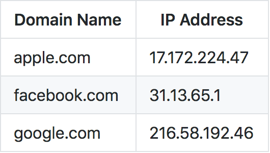

- I'm a native Brooklynite
- I can read and write in Korean
- My favorite food is olives
In simplest terms, DNS is like a phone book for the Internet
git config --global user.name "YOUR NAME"
git config --global user.email "YOUR EMAIL ADDRESS"
ssh git@github.com
Hi (NAME)! You've successfully authenticated, but GitHub does not provide shell access. Connection to github.com closed.
/usr/bin/ruby -e "$(curl -fsSL https://raw.githubusercontent.com/Homebrew/install/master/install)"
npm install npm -g
git --version
brew --version
node -v
npm -v
In order to become a great programmer, you have to think like a computer. Essentially, you have to think in code. The first step, is to write down whatever you want your computer to do in plain English.
Conditional: If the red button is tapped (event listener):
The Client-Server model / Front-End vs Back-End
The Internet vs the Web
Git vs Github
Why JavaScript, knowing what you know now?
Q&A
Back to TOCs ›